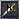
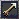
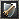
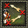
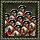
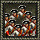
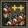

第三章 游戏操作方法
3.4 训练军事单位及操作

当拥有足够多的资源后，就可以开始训练军队。无论是保护自己的建筑、矿井和农民，还是攻击敌人，都需要军事单位的参与。欧洲国家在堡垒、堡垒要塞和马厩里训练步兵和骑兵，美洲原住民国家在兵营、马厩、堡垒里训练士兵。
大多数军事单位需要将农民送到堡垒或兵营中进行“训练”才能创建成士兵单位，因此，创建士兵其实也是一种农民升级的过程。
① 选中一些农民；
② 移动鼠标到军事建筑（如图中是一个印加堡垒）上，鼠标会变成“进驻己方建筑”的模式，此时右键单击鼠标，可以指派农民进入建筑；
③ 点击建筑，左下角会出现建筑操作栏；
④ 这里显示目前建筑内有多少单位（包括军事单位和农民）；
⑤ 建筑的默认菜单按钮（一级菜单）；
⑥ 建筑的附加菜单按钮（二级菜单）；
⑦ 建筑的内置单位菜单，这里显示建筑内有哪些单位及其数量，点击单位图标，可以派出该单位（按住Shift 键点击，可以一次派出5个相同单位）；
⑧ 在默认菜单中，点击要创建的军队，即可将建筑内的农民训练成军事单位（按住 按住Shift 键点击，可以一次创建5个，按住Ctrl 键点击，可以无限创建）；
⑨ 点击该按钮设定建筑的集结点（也可以通过选中建筑后按住 Ctrl 键点击鼠标右键来设定）。点击后，鼠标会变成

设定地点图示，再在地图上点击鼠标左键即可。
有了军队后，就可以随意攻击敌人。在攻击敌军之前，我们需要了解我方军队的一些参数和操作。
军事单位参数图示
 刀剑伤害

火枪伤害

戟攻伤害
 弓箭伤害
战斧伤害
吹箭伤害
投石伤害

炮弹伤害

医疗

防御

刀剑防御

戟防御

弹片防御
 弓箭防御

枪击防御
军事单位命令图标
保护（快捷键：G）
军事单位可以保护气体单位或建筑。点击操作栏中这个按钮，鼠标会变成盾牌的图样（如右图），再选择想保护的单位单击即可。

巡逻（快捷键：P）
指定一个或多个单位在规定的2区域内巡逻。点击该图标，鼠标会变成巡逻的图示（如右图），再点击一个地点，军队就会沿着原来的地点和指定的地点见来回巡逻。
关闭队友射击
射击范围内有友军则禁止开枪（默认开启）。
保持位置（快捷键：S）
保持该单位固定在目前位置上（附近有敌军时仍可以开火）。
允许移动（快捷键：V）
允许该单位自由追逐敌军（默认开启）。
攻击（快捷键：A）
点击该图标，鼠标会变成宝剑的图示（如右图），选择一个敌军，右键单击可以指派军队前去攻击该敌人。
仅允许近战攻击
只允许该单位使用近战武器进行攻击。
允许进攻（快捷键：E）
该单位会默认攻击周边的敌军（默认启用）。
禁止攻击（快捷键：D）
禁止攻击敌人，禁止进行防御手段。
指定火炮攻击
点击该图标，鼠标会变成炮弹图示（如右图），右键指定一个攻击地点，加农炮会像那个地点开炮。


回型编队（步兵）/凹型编队（骑兵）（快捷键：C）
编回型阵列（步兵）/凹型编队（骑兵）。

补充编队人数（快捷键：F）
将附近的士兵添加到编队中来。
通过以上操作按钮，可以攻击敌人部队，或选中军队后，将鼠标移到敌军单位上，鼠标会变成

宝剑图示，右键单击，即可发出攻击指令。
操作军事单位攻击建筑物大致可分为3种形式：
1、通过火枪射击建筑物内驻扎的单位；
所有持有火枪的兵种，可以在外围对建筑物射击，以消灭建筑物内驻扎的敌军，而不会对建筑物造成伤害。不过，由于建筑内敌军有建筑的保护，外围射击的致死率会较正常情况低不少。
操作方法：选中火枪兵种，将鼠标移到建筑物上，鼠标会变成
宝剑图示，右键单击，即可发出攻击指令。
2、通过强行攻占建筑内占领建筑物；
所有陆军单位（包括农民）都可以通过强行攻占的方式抢夺建筑物，敌军建筑内有人时，攻占放会进入并杀死建筑内的敌军，直至建筑内敌军被消灭完，再进入建筑即可占领该建筑。通过这种方法，不会对建筑本身造成损害。
操作方法：选中士兵，将鼠标移到建筑物大门的位置上，鼠标会变成

攻占图示，右键单击，即可发出攻占指令。
3、通过火炮、弓箭直接攻击建筑物本身。
美洲原住民国家的弓箭手，可以使用火箭攻击建筑以对建筑造成伤害；欧洲国家的炮兵，也可以轰击建筑。这两种方式都会对建筑本身造成生命值损失，直至完全摧毁建筑。
操作方法：选中弓箭手，将鼠标移到建筑物上，鼠标会变成
宝剑图示，右键单击，即可发出攻击指令，弓箭手会自动发射火箭；选中加农炮，将鼠标移到建筑物上，鼠标会变成
宝剑图示，右键单击，即可发出攻击指令。
攻击矿井
由于矿井只允许农民进驻，军事单位无法通过强行攻占来抢占矿井，只能通过火枪射击矿井内的农民和火炮、弓箭直接攻击矿井来攻击。另外，近战单位和美洲原住民国家非火枪、非弓箭单位还可以通过摧毁矿井的操作，直接摧毁矿井。
操作方法：选中近战单位和美洲原住民国家非火枪、非弓箭单位，将鼠标移到建筑物上，鼠标会变成

摧毁矿井图示，右键单击，即可发出攻击指令，士兵会靠近矿井后直接将其摧毁。
消灭敌军矿井周边的军队和建筑后，也可以直接俘虏矿井，将矿井的颜色之间转变会自己的，可受自己操控，并且产出的资源也属于自己。
如果选中火枪兵，将鼠标移到敌人建筑上，建筑没有变成
宝剑图示，说明该建筑内没有敌人，可以直接占领。